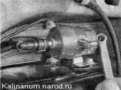
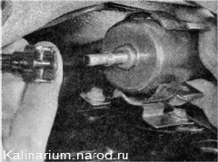
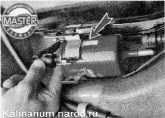

Топливный фильтр - заменаДля выполнения работы потребуется смотровая канава или эстакада. Последовательность выполнения 1. Подготавливаем автомобиль к выполнению работы. 2. Сбрасываем давление топлива. После сброса давления в топливопроводе остается небольшое количество топлива. 3. Ветошью протираем топливный фильтр и подсоединенные к нему трубки топливопровода. Резьбу стяжного болта хомута крепления фильтра обрабатываем проникающей смазкой. Перед отсоединением наконечника трубки от фильтра подготовьте небольшую широкую емкость объемом 0,5 л для слива остатков бензина из топливопровода. 4. Ключом на 10 мм отворачиваем стяжной болт хомута крепления топливного фильтра. 5. Сжимая фиксаторы, отсоединяем трубки топливопровода от фильтра. 6. Извлекаем фильтр из хомута. Установка Устанавливаем новый фильтр в обратной последовательности. Обратите внимание на стрелку, нанесенную на корпус фильтра и указывающую направление потока топлива. Она должна быть направлена к передней части автомобиля.  |